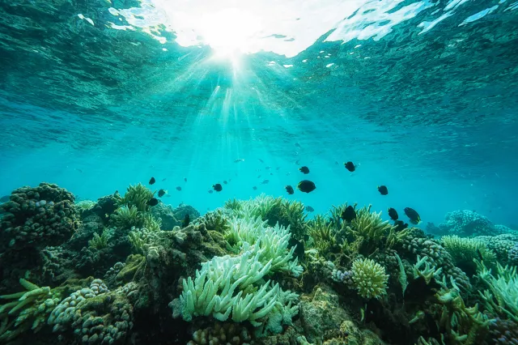

images/hero-bg.png

Ark · since 2016
For those who can't ask for help themselves.
From coastal waters to city streets — we rescue, treat, and rehome sea turtles, dogs, and penguins in need.
Scroll down
images/section-bg-turtles.png

01 · Sea Turtles
Rescued from nets and currents
Sea turtles wash up entangled in discarded fishing nets or injured by boat strikes, unable to dive or feed. Our team frees them, treats their wounds, and works through weeks of rehabilitation before they're strong enough to return to open water.
127rescued since 2019
94%released to the ocean
6turtle species
images/turtle.png

images/section-bg-penguins.png

03 · Penguins
From oil spills back to the colony
Oil spills leave penguins unable to stay waterproof or warm, and injuries keep them from swimming and feeding. We wash and treat affected birds, monitor colony health, and return each one home once they're ready.
63washed & treated
4colonies monitored
89%returned to colony
images/penguin.png